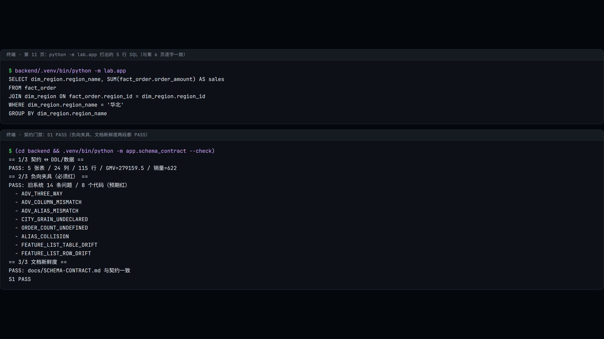

练本 · 阅读版（md 正典派生，改内容请改 manual/page-11.md）
第 11 页 · 换真契约：让 SQL 从契约文件长出来
前置：第 0 页备好环境；本页接 L1 留下的
lab/app.py（第 8 页那份；L1 = 第 0–9 页盖出来的骨架版）。不用启动服务，也不用连 MySQL。
这一页构建什么
把第 6 页手抄进 lab/app.py 的 CONTRACT = {...} 字典删掉，改成从 contracts/schema.contract.yaml 加载：手抄字典是副本，契约文件是唯一事实源。
行为不变：build_sql 改成按契约的指标别名/公式和地区全集生成 SQL，拼出的 5 行必须和第 6 页逐字一样——换了来源，行为不变。
猜一猜
动手前写下答案：删掉手抄字典、改成读契约后，打出来的 5 行 SQL 会变吗？产品说“销售额的口径改了”，你改代码，还是只改契约文件？
动手
改 lab/app.py，三处。三步都改完按 Ctrl+S 保存再跑。
输出一样看不出没保存：不保存跑的还是第 8 页的旧代码——但旧代码也打同样的 5 行 SQL，改没改成功由后面「拆一刀」验。
第 1 步：加两行 import。 在 import json / pymysql / time 这段标准库 import 之后、from fastapi ... 之前插两行：import yaml 和 from pathlib import Path。
第 2 步：删掉 CONTRACT = {...} 整块（9 行），原位置换成加载 + 两个小函数：
ROOT = Path(__file__).resolve().parents[1]
CONTRACT = yaml.safe_load((ROOT / "contracts" / "schema.contract.yaml")
.read_text(encoding="utf-8"))
def _region_values() -> list[str]:
table = next(t for t in CONTRACT["tables"] if t["name"] == "dim_region")
column = next(c for c in table["columns"] if c["name"] == "region_name")
return column["value_domain"]["values"]
def _metric_formula(keyword: str) -> str | None:
for metric in CONTRACT["metrics"]:
if keyword in [metric["name"], *metric.get("aliases", [])]:
return metric["formula"]
ROOT：从 lab/app.py 往上两级算出仓库根，所以契约写相对路径、换机器也能读。
_region_values()：在 tables 里找到 dim_region 的 region_name 列，取 value_domain.values。
_metric_formula()：在 metrics 里按 name 或 aliases 命中就返回 formula，都不中返回 None（函数不写 return 时默认返回它）。
第 3 步：build_sql 改用这两个函数。 只换前 3 行，FROM/JOIN/WHERE/GROUP BY 4 行不动：
region = next(k for k in keywords if k in _region_values())
metric = next(k for k in keywords if _metric_formula(k))
sql = f"""SELECT dim_region.region_name, {_metric_formula(metric)} AS sales
在仓库根目录跑这两条（第二条的 cd backend 不能省：在仓库根跑 -m app.schema_contract 会报 No module named 'app'）：
backend/.venv/bin/python -m lab.app
(cd backend && .venv/bin/python -m app.schema_contract --check)
注意第二条外面的括号：cd backend 在子 shell 里执行，不会把你当前目录带走，跑完你仍停在仓库根目录——后面「拆一刀」的命令照原样敲就行。
你应该看到
第一条命令打出的 5 行，和第 6 页逐字一致：
SELECT dim_region.region_name, SUM(fact_order.order_amount) AS sales
FROM fact_order
JOIN dim_region ON fact_order.region_id = dim_region.region_id
WHERE dim_region.region_name = '华北'
GROUP BY dim_region.region_name
第二条命令绿到底（2/3 的负向夹具“必须红”也是 PASS，8 个代码逐条列出，这里不贴）：
== 1/3 契约 ↔ DDL/数据 ==
PASS: 5 张表 / 24 列 / 115 行 / GMV=279159.5 / 销量=622
…（负向夹具、文档新鲜度两段都 PASS）
S1 PASS

对账
- 你猜 SQL 会变吗？一字没变。
- 证据：契约里 GMV 的
formula就是SUM(fact_order.order_amount)，region_name.value_domain.values里也有华北——手抄字典抄的本就是契约，换来源只是删掉副本、留下原文。
- 证据：契约里 GMV 的
aliases/formula落在 SQL 哪一段：build_sql拿"销售额"查metrics，命中 GMV 的aliases: [销售额, 成交总额, 订单总额]，取回formula填进SELECT ... {formula} AS sales的公式位。"华北"落哪：由_region_values()在value_domain.values里查到，填进WHERE ... = '{region}'的引号里。
- 为什么唯一事实源重要：口径只在 yaml 一处定义。以后改销售额口径，只改
formula，build_sql不用动。- 漂移：手抄字典是第二份，改漏一处，两个人就拿两份口径各算各的——这就叫漂移。第 6 页那条 SQL 没错，错的是它有两份。
你现在拥有：一条从唯一事实源取口径的生成链——
build_sql的指标公式和地区取值不再写死（注意：extract_keywords里的REGIONS/METRICS还是写死的，那是第 5 页的遗留，后面 L3 再换），改口径只改一处；第 12 页会把它真交给数据库。
拆一刀
- 先拍快照：
scripts/lab save p11-before（名字只能用字母、数字、点、下划线、短横线，且必须以字母或数字开头；中文会被拒）。 - 打开
contracts/schema.contract.yaml，把region_name的values: [华南, 华东, 西南, 华北, 华中]改成values: [华南, 华东, 西南, 华中]，Ctrl+S，再跑backend/.venv/bin/python -m lab.app。
会红什么："华北" 在契约里查不到了，next() 空手而归，抛 StopIteration、退出码 1。
报错原文（这里只留与定位相关的行；你的终端会多几行 <frozen runpy>，路径用 ... 略去，不影响结论，行号以你的文件为准）：
Traceback (most recent call last):
File ".../lab/app.py", line 48, in build_sql
region = next(k for k in keywords if k in _region_values())
StopIteration
- 还原：
scripts/lab reset p11-before --yes，末行是现在工作区与快照 "p11-before" 完全一致。；再跑一次backend/.venv/bin/python -m lab.app，5 行 SQL 回来，WHERE dim_region.region_name = '华北'还在第 4 行。
一句结论：唯一事实源被改坏，程序当着你面报错；没有唯一事实源，改坏一处，另一处替你继续跑——这就是本页要的反面。